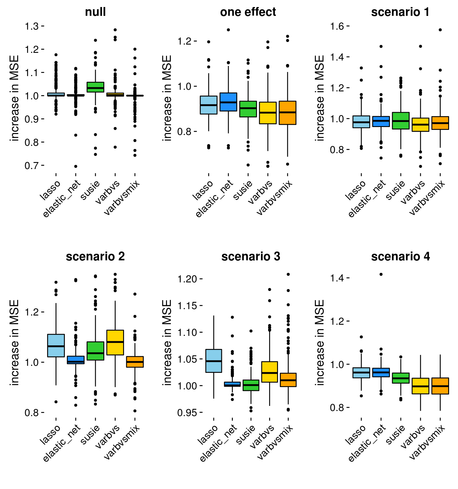

Last updated: 2020-02-11
Checks: 7 0
Knit directory: dsc-linreg/analysis/
This reproducible R Markdown analysis was created with workflowr (version 1.6.0). The Checks tab describes the reproducibility checks that were applied when the results were created. The Past versions tab lists the development history.
Great! Since the R Markdown file has been committed to the Git repository, you know the exact version of the code that produced these results.
Great job! The global environment was empty. Objects defined in the global environment can affect the analysis in your R Markdown file in unknown ways. For reproduciblity it’s best to always run the code in an empty environment.
The command set.seed(1) was run prior to running the code in the R Markdown file. Setting a seed ensures that any results that rely on randomness, e.g. subsampling or permutations, are reproducible.
Great job! Recording the operating system, R version, and package versions is critical for reproducibility.
Nice! There were no cached chunks for this analysis, so you can be confident that you successfully produced the results during this run.
Great job! Using relative paths to the files within your workflowr project makes it easier to run your code on other machines.
Great! You are using Git for version control. Tracking code development and connecting the code version to the results is critical for reproducibility. The version displayed above was the version of the Git repository at the time these results were generated.
Note that you need to be careful to ensure that all relevant files for the analysis have been committed to Git prior to generating the results (you can use wflow_publish or wflow_git_commit). workflowr only checks the R Markdown file, but you know if there are other scripts or data files that it depends on. Below is the status of the Git repository when the results were generated:
Ignored files:
Ignored: .sos/
Ignored: analysis/.sos/
Ignored: dsc/.sos/
Ignored: dsc/linreg.html
Ignored: dsc/linreg/
Unstaged changes:
Modified: output/linreg_mse.csv
Note that any generated files, e.g. HTML, png, CSS, etc., are not included in this status report because it is ok for generated content to have uncommitted changes.
These are the previous versions of the R Markdown and HTML files. If you’ve configured a remote Git repository (see ?wflow_git_remote), click on the hyperlinks in the table below to view them.
| File | Version | Author | Date | Message |
|---|---|---|---|---|
| html | 2d4cb6a | Peter Carbonetto | 2020-02-11 | Re-built results_overview page. |
| Rmd | 5e9191c | Peter Carbonetto | 2019-10-31 | Updated code in results_overview for dsc 0.3.11. |
| Rmd | 46bf611 | Peter Carbonetto | 2019-05-13 | Minor edits to R Markdown formatting. |
| html | 191bdb9 | Peter Carbonetto | 2019-04-17 | Re-built results_overview page with (new) workflowr 1.3.0 after |
| html | 7103009 | Peter Carbonetto | 2019-04-13 | Re-built results_overview page with dscrutils 0.3.6. |
| html | 06b64ef | Peter Carbonetto | 2019-04-13 | Fixed typo in results_overview. |
| Rmd | c8a0198 | Peter Carbonetto | 2019-04-13 | wflow_publish(“results_overview.Rmd”) |
| html | 52ee840 | Peter Carbonetto | 2019-04-13 | Fixed up data frame in results_overview analysis. |
| Rmd | a079864 | Peter Carbonetto | 2019-04-13 | wflow_publish(“results_overview.Rmd”) |
| html | bb97ffa | Peter Carbonetto | 2019-04-13 | Re-built results_overview with newly generated DSC results. |
| Rmd | 5811a58 | Peter Carbonetto | 2019-04-13 | wflow_publish(“results_overview.Rmd”) |
| Rmd | cfcb97b | Peter Carbonetto | 2019-04-10 | Moved links to bottom of each .Rmd file. |
| html | cfcb97b | Peter Carbonetto | 2019-04-10 | Moved links to bottom of each .Rmd file. |
| Rmd | 4cc0ccd | Peter Carbonetto | 2019-04-10 | A few small edits to the .Rmd files. |
| html | d5305a0 | Peter Carbonetto | 2019-04-10 | Removed include files; they are not needed. |
| html | e6d35b2 | Peter Carbonetto | 2019-04-10 | Fixing spacing before “sessioninfo” in results_overview. |
| Rmd | 91ae628 | Peter Carbonetto | 2019-04-10 | wflow_publish(“results_overview.Rmd”) |
| html | 9b8979d | Peter Carbonetto | 2019-04-09 | Removed unneeded sessionInfo. |
| Rmd | 70a296f | Peter Carbonetto | 2019-04-09 | wflow_publish(“results_overview.Rmd”) |
| html | 8202971 | Peter Carbonetto | 2019-04-09 | Revised text at the end of results_overview analysis. |
| Rmd | a77053e | Peter Carbonetto | 2019-04-09 | wflow_publish(“results_overview.Rmd”) |
| html | 5662c9a | Peter Carbonetto | 2019-04-09 | Re-built results_overview after revising plots. |
| Rmd | f47cacb | Peter Carbonetto | 2019-04-09 | Added comments to functions in plots.R. |
| Rmd | 54f1ae7 | Peter Carbonetto | 2019-04-09 | Implemented functions to compute and plot relative MSE. |
| html | 54f1ae7 | Peter Carbonetto | 2019-04-09 | Implemented functions to compute and plot relative MSE. |
| html | 5757c93 | Peter Carbonetto | 2019-04-09 | Added packages used in DSC to sessionInfo in results_overview.Rmd. |
| Rmd | 0e22a15 | Peter Carbonetto | 2019-04-09 | wflow_publish(“results_overview.Rmd”) |
| Rmd | a7d093a | Peter Carbonetto | 2019-04-09 | Changed indentation in results_overview.Rmd. |
| html | d1bb440 | Peter Carbonetto | 2019-04-09 | Added more box plots to results_overview analysis, and added some text |
| Rmd | b2c80eb | Peter Carbonetto | 2019-04-09 | wflow_publish(“results_overview.Rmd”) |
| html | 5a34c5e | Peter Carbonetto | 2019-04-09 | Re-built results_overview with new design of DSC; new results |
| Rmd | 2a86b01 | Peter Carbonetto | 2019-04-09 | wflow_publish(“results_overview.Rmd”) |
| Rmd | ada904c | Peter Carbonetto | 2019-04-09 | Fixed a couple more bugs in the fit modules. |
| Rmd | ba71a22 | Peter Carbonetto | 2019-04-09 | Added score modules to pipeline. |
| Rmd | 5004487 | Peter Carbonetto | 2019-04-09 | Edited preamble in results_overview.Rmd. |
| Rmd | 093d5e6 | Peter Carbonetto | 2019-04-09 | Some revisions to the text in the README and home page. |
| html | 58540be | Peter Carbonetto | 2019-04-09 | Added links and other content to home page. |
| Rmd | d4d0415 | Peter Carbonetto | 2019-04-09 | Re-organized some files, and moved usage instructions to workflowr page. |
In this short analysis, we compare the prediction accuracy of several linear regression in the four simulation examples of Zou & Hastie (2005). We also include two additional scenarios, similar to Examples 1 and 2 from Zou & Hastie (2005): a “null” scenario, in which the predictors have no effect on the outcome; and a “one effect” scenario, in which only one of the predictors affects the outcome.
The six methods compared are: (1) ridge regression; (2) the Lasso; (3) the Elastic Net; (4) “Sum of Single Effects” (SuSiE) regression, described here; (5) variational inference for Bayesian variable selection, or “varbvs”, described here; and (6) “varbvsmix”, an elaboration of varbvs that replaces the single normal prior with a mixture-of-normals.
Load a few packages and custom functions used in the analysis below.
library(dscrutils)
library(ggplot2)
library(cowplot)
source("../code/plots.R")Here we use function “dscquery” from the dscrutils package to extract the DSC results we are interested in—the mean squared error in the predictions from each method and in each simulation scenario.
library(dscrutils)
methods <- c("ridge","lasso","elastic_net","susie","varbvs","varbvsmix")
dsc <- dscquery("../dsc/linreg",
c("simulate","simulate.scenario","fit","mse.err"),
verbose = FALSE)
dsc <- transform(dsc,
simulate = factor(simulate),
fit = factor(fit,methods))
names(dsc)[1] <- "seed"
nrow(dsc)
# [1] 4800After this call, the “dsc” data frame should contain results for 720 pipelines—6 methods times 6 scenarios times 20 data sets simulated in each scenario.
nrow(dsc)
# [1] 4800After these steps, the “dsc” data frame should have five columns: “seed”, the seed used to simulate the data; “simulate”, the data simulation module used; “simulate.scenario”, the particular scenario used in the “zh” simulation module; “fit”, the linear regression method used; and “mse.err”, the mean squared error in the test set predictions.
head(dsc)
# seed simulate simulate.scenario simulate.output.file fit
# 1 1 zh 1 zh/zh_1 ridge
# 2 1 zh 2 zh/zh_2 ridge
# 3 1 zh 3 zh/zh_3 ridge
# 4 1 zh 4 zh/zh_4 ridge
# 5 2 zh 1 zh/zh_5 ridge
# 6 2 zh 2 zh/zh_6 ridge
# fit.output.file mse.err
# 1 ridge/zh_1_ridge_1 15.80111
# 2 ridge/zh_2_ridge_1 13.84921
# 3 ridge/zh_3_ridge_1 226.41832
# 4 ridge/zh_4_ridge_1 250.34996
# 5 ridge/zh_5_ridge_1 13.05286
# 6 ridge/zh_6_ridge_1 13.12446Note that you will need to run the DSC before querying the results; see here for instructions on running the DSC. If you did not run the DSC to generate these results, you can replace the dscquery call above by this line to load the pre-extracted results stored in a CSV file:
dsc <- read.csv("../output/linreg_mse.csv")This is how the CSV file was created:
write.csv(dsc,"../output/linreg_mse.csv",row.names = FALSE,quote = FALSE)Compute the mean squared error (MSE) in the predictions relative to ridge regression, so that larger numbers mean greater error relative to predictions from ridge regressions.
rmse <- compute.relative.mse(dsc)
dsc <- cbind(dsc,rmse)The boxplots below summarize the prediction errors in each of the simulations. A relative MSE less than 1 indicates an improvement in accuracy over ridge regression, whereas a relative MSE greater than 1 indicates a decrease in accuracy compared to ridge regression. Ridge regression will always have a relative MSE of 1, so the results for ridge regression are not shown.
p1 <- rmse.boxplot(subset(dsc,simulate == "null_effects"),"null")
p2 <- rmse.boxplot(subset(dsc,simulate == "one_effect"),"one effect")
p3 <- rmse.boxplot(subset(dsc,simulate.scenario == 1),"scenario 1")
p4 <- rmse.boxplot(subset(dsc,simulate.scenario == 2),"scenario 2")
p5 <- rmse.boxplot(subset(dsc,simulate.scenario == 3),"scenario 3")
p6 <- rmse.boxplot(subset(dsc,simulate.scenario == 4),"scenario 4")
p <- plot_grid(p1,p2,p3,p4,p5,p6)
print(p)
Here are a few initial impressions from these plots.
In most cases, the Elastic Net does at least as well, or better, than the Lasso. This is what we would expect.
Ridge regression actually achieves good accuracy in all cases except Scenario 4 and the “one effect” setting. Ridge regression is expected to do less well in Scenario 4 because the majority of the true coefficients are zero, so a sparse model would be favoured. Similarly, a sparse model should better fit data simulated in the “one effect” scenario.
In Scenario 4, where the predictors are correlated in a structured way, and the effects are sparse, varbvs and varbvsmix perform considerably better than the other methods.
The “varbvsmix” method yields competitive predictions in all scenarios.
The “Session information” button below gives the version of R and the packages that were used to generate these results. This listing includes the R packages that were also used to run the DSC.
sessionInfo()
# R version 3.5.1 (2018-07-02)
# Platform: x86_64-pc-linux-gnu (64-bit)
# Running under: Scientific Linux 7.4 (Nitrogen)
#
# Matrix products: default
# BLAS/LAPACK: /software/openblas-0.2.19-el7-x86_64/lib/libopenblas_haswellp-r0.2.19.so
#
# locale:
# [1] C
#
# attached base packages:
# [1] stats graphics grDevices utils datasets methods base
#
# other attached packages:
# [1] varbvs_2.6-5 susieR_0.8.1.0516 glmnet_2.0-16 foreach_1.4.4
# [5] Matrix_1.2-15 MASS_7.3-51.1 cowplot_0.9.4 ggplot2_3.1.1
# [9] dscrutils_0.3.8
#
# loaded via a namespace (and not attached):
# [1] Rcpp_1.0.2 RColorBrewer_1.1-2 compiler_3.5.1
# [4] pillar_1.3.1 later_0.7.5 git2r_0.26.1
# [7] plyr_1.8.4 workflowr_1.6.0 iterators_1.0.10
# [10] tools_3.5.1 digest_0.6.18 lattice_0.20-38
# [13] evaluate_0.12 tibble_2.1.1 gtable_0.2.0
# [16] pkgconfig_2.0.2 rlang_0.4.0 yaml_2.2.0
# [19] withr_2.1.2 stringr_1.3.1 dplyr_0.8.0.1
# [22] knitr_1.20 fs_1.3.1 rprojroot_1.3-2
# [25] grid_3.5.1 tidyselect_0.2.5 glue_1.3.0
# [28] R6_2.3.0 rmarkdown_1.10 latticeExtra_0.6-28
# [31] purrr_0.3.2 magrittr_1.5 whisker_0.3-2
# [34] codetools_0.2-15 backports_1.1.2 scales_1.0.0
# [37] promises_1.0.1 htmltools_0.3.6 assertthat_0.2.0
# [40] colorspace_1.3-2 httpuv_1.4.5 labeling_0.3
# [43] nor1mix_1.2-3 stringi_1.2.4 lazyeval_0.2.1
# [46] munsell_0.5.0 crayon_1.3.4